This is a short note to explain the nature of the B_matrix found in the
Siemens private (CSA) fields of the DICOM headers of a diffusion weighted
acquisition. We trying to explain the relationship between the B_matrix and
the b value and the gradient vector. The acquisition is made with a planned
(requested)  -value - say 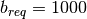, and with a requested gradient
direction 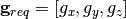 (supposedly a unit vector) and
peak amplitude
-value - say 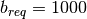, and with a requested gradient
direction 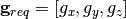 (supposedly a unit vector) and
peak amplitude  . When the sequence runs the gradient is modulated by an
amplitude envelope 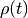 with 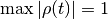 so that the time course
of the gradient is 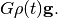 is measured in units of 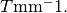 This leads to an important temporal weighting parameter of the
acquisition:
. When the sequence runs the gradient is modulated by an
amplitude envelope 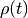 with 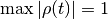 so that the time course
of the gradient is 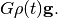 is measured in units of 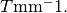 This leads to an important temporal weighting parameter of the
acquisition:
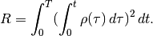
(See Basser, Matiello and LeBihan, 1994.) Another formulation involves the introduction of k-space. In standard in-plane MR image encoding
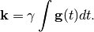
For the classical Stejskal and Tanner pulsed gradient spin echo (PGSE)
paradigm where two rectangular pulses of width  seconds are
spaced with their onsets
seconds are
spaced with their onsets  seconds apart 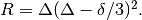 The units of
seconds apart 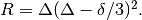 The units of  are 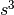. The -matrix has
entries
are 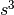. The -matrix has
entries
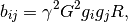
where  is the gyromagnetic radius (units
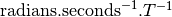) and
is the gyromagnetic radius (units
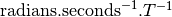) and  and
and  are
axis direcrtions from
are
axis direcrtions from  . The units of the B-matrix are
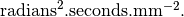
. The units of the B-matrix are
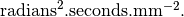
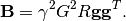
The b-value for the acquisition is the trace of  and is
given by
and is
given by

Though the Stejskal and Tanner formula is available for the classic
PGSE sequence, a different sequence may be used (e.g. TRSE on Siemens
Trio), and anyway the ramps up and down on the gradient field will not
be rectangular. The Siemens scanner software calculates the actual
values of the 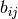 by numerical integration of the formula above
for . These values are in the form of the 6 ‘B-matrix’ values
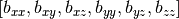.
In this form they are suitable for use in a least squares estimation of the diffusion tensor via the equations across the set of acquisitions:
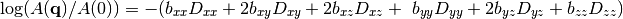
The gradient field typically stays in the one gradient direction, in
this case the relationship between ,  and the is as
follows. If we fill out the symmetric B-matrix as:
and the is as
follows. If we fill out the symmetric B-matrix as:
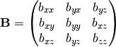
then is equal to the rank 1 tensor 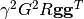. By performing an eigenvalue and
eigenvector decomposition of we obtain
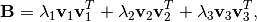
where only one of the  , say
, say  , is (effectively)
non-zero. (Because the gradient is always a multiple of a constant
direction is a effectively a rank 1 tensor.) Then
, is (effectively)
non-zero. (Because the gradient is always a multiple of a constant
direction is a effectively a rank 1 tensor.) Then
 , and 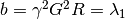. The b-vector
, and 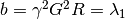. The b-vector  is given by:
is given by:
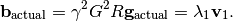
Once we have 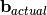 we can calculate  and 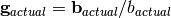. Various sofware packages (e.g. FSL’s DFT-DTIFIT) expect
to get N x 3 and N x 1 arrays of 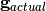 (bvecs) and
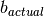 values (bvals) as their inputs.
and 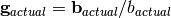. Various sofware packages (e.g. FSL’s DFT-DTIFIT) expect
to get N x 3 and N x 1 arrays of 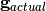 (bvecs) and
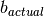 values (bvals) as their inputs.
Callaghan, Eccles and Xia (1988) showed that the signal from the narrow pulse PGSE paradigm measured the Fourier transform of the diffusion displacement propagator. Propagation space is measured in displacement per unit time 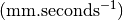. They named the reciprocal space q-space with units of 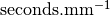.
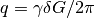
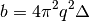
Diffusion spectroscopy measures signal over a wide range of -values
(or  -values) and diffusion times () and performs a -space
analysis (Fourier transform of the diffusion signal decay).
-values) and diffusion times () and performs a -space
analysis (Fourier transform of the diffusion signal decay).
There remains a bit of mystery as to how  (as a vector in
-space) is specified for other paradigms. We think that (a) it only
matters up to a scale factor, and (b) we can loosely identify
with
(as a vector in
-space) is specified for other paradigms. We think that (a) it only
matters up to a scale factor, and (b) we can loosely identify
with  , where is the unit
vector in the gradient direction.
, where is the unit
vector in the gradient direction.